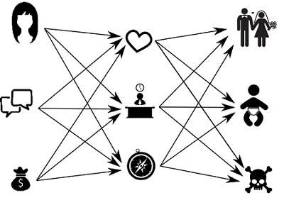
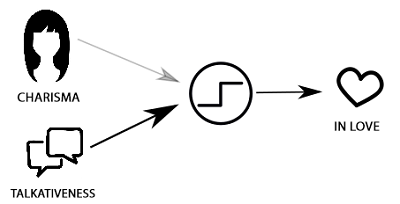
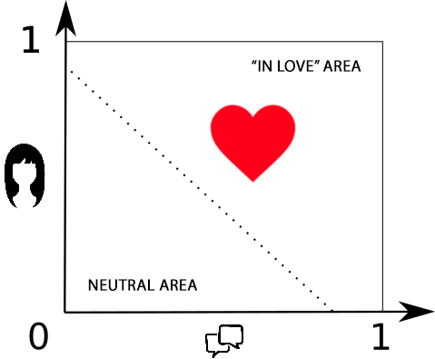
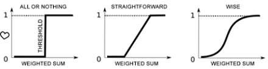
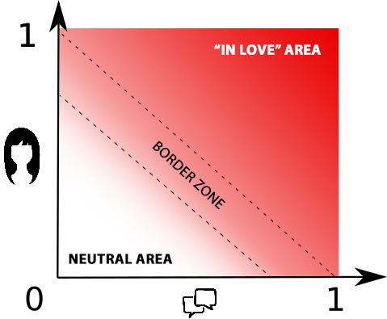
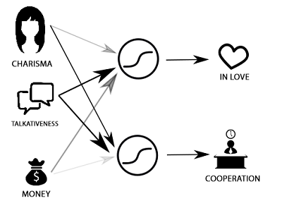
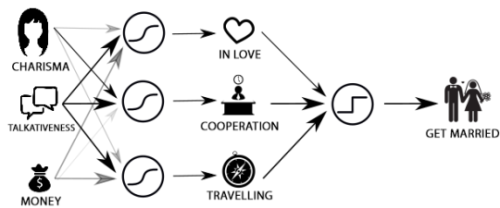
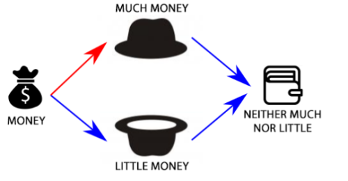
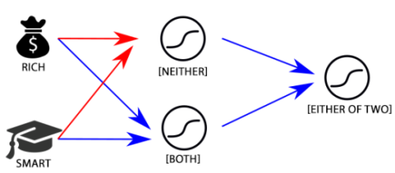
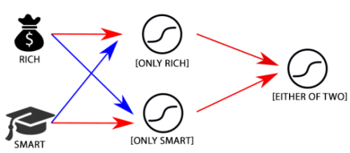

Contact Us
Artificial neural networks explained in simple words
Story start
When I used to start a conversation about neural networks over a bottle of beer, people were casting glances at me of what seemed to be fear; they grew sad, sometimes with their eyelid twitching. In rare cases, they were even eager to take refuge under the table. Why? These networks are simple and instinctive, actually. Yes, believe me, they are! Just let me prove this is true!
Suppose there are two things I’m aware of about the girl: she looks pretty to my taste or not, and I have lots to talk about with her or I haven’t. True and false will be one and zero respectively. We’ll take similar principle for appearance. The question is: “What girl I’ll fall in love with,and why?”
We also can think it straight and uncompromisingly: “If she looks pretty and there’s plenty to talk about, then I will fall in love. If neither is true, then I quit”.
But what if I like the lady but there’s nothing to talk about with her? Or vice versa?
It’s understood that for each of us one of these things will be of more importance. To be precise, each criterion has its own degree of importance, or in other words its weight. Criterion multiple by weight will give us “appearance impact” or “conversation impact”, accordingly.
Now, with my conscience clear I can answer my own question:
“If charisma impact and talkativeness impact in total make value more than “in love” then I’ll go for it …”
So if I put more weight in lady’s talkativeness and less weight in the way she looks, then in a disputable situation I will fall in love with a person I’d like to chat with. The opposite being true, too.

This rule is a neuron proper.
An artificial neuron is a function that transforms multiple inputs into one output. By setting up the weights of these inputs and threshold of excitation, we adjust the neuron’s adequacy. Basically, for many of us, the science of life ends on this level, but this story is not about us, is it?
Let’s draw a few more conclusions:
-
In case both weights are low, it will be difficult for me to fall in love with anyone.
-
In case both weights are very high, I can fall in love even with a light pole.
-
You can also make me love the pole if you decrease my amorousness threshold. But I beg you not to do this to me! Let’s forget about it for now, okay?
Neural network
We can hardly find clearly nice and explicitly talkative ladies. Not all amorousnesses are equal no matter who says what. For this reason, we should avoid brutal and uncompromising “0” and “1” and replace them with percentage values. Then, it’s possible to say “I’m love-struck” (80%) or “This lady is not very talkative” (20%).
Our primitive “all-or-nothing neuron” from the above does not fit the case. It is superseded with a “wise neuron” which operates giving us values from 0 to 1 depending on input data.
A “wise neuron” may say to us: “This lady is pretty enough but I don’t know any common points we can talk about, and that’s why I’m not so fond of her”.

Lets’ go further. We’ll use these two facts for a different assessment: how good it’ll be to work (cooperate) with such girl? Our actions will be absolutely the same – let’s add a wise neuron and adjust weights to feel comfortable.
Judging girls based on two features will give us a very rough result. Let’s introduce one more criterion – money! It will be ranging from zero (absolutely poor) till one (Rockefeller’s daughter). Let’s see how our assumptions change with the money criterion introduced.
For myself, I have decided that in terms of sexual appeal money are not so important, but her chic look will definitely have an effect on me. For this reason, I keep the money weight low yet positive.
In terms of business relationships, it makes absolutely no difference for me how rich is the girl, so I suggest the money weight to be zero.
It’s folly to check out a girl just for work or love affair. Let’s consider how pleasing could it be if we decided to travel with her:
-
Charisma is neutral here (weight is zero or very low).
-
Being talkative is good (positive weight).
-
In real trips, when the money runs out suddenly, it’s a very thrilling time. For this reason I’ll give the money a slightly negative weight.
When making all three schemes into one, we’ll discover that we have shifted to a more
thoughtful level of judgment: from charisma, dollar bills and talkativeness – to admiration,
cooperation, and comfort when traveling together.

Note these signals can vary from zero to one,
too. This means I can finally add one last “all-or-nothing neuron” to let it answer
my question exactly: “should I marry her or not?”
Well, of course, not everything is that simple (in terms of women). Let’s introduce a little of drama and reality to our simple and rosy world. First, we’ll make the “marry-or-not” neuron a wise one. It’s a human nature to hesitate, one way or another. One more thing, we’ll add the “want-children-from-her” neuron, and to be very close to the reality – “keep-away-from-her” neuron.
I understand nothing of women, so my primitive network now looks like the illustration at the top of this article.
Input assertions are called “input layer”, final judgments – “output layer”, while hidden in the center is a “hidden layer”. The hidden layer is my judgments and unfinished thoughts no one knows about. Hidden can be several layers or none of them.
Away from all-or-nothing thing
Do you remember my talking about the negative effect the money has on my desire to go on a trip with someone? Well, I was cheating. For joint trips somewhere you’d better have a person by your side with money, neither too much nor very little. For me, it seems more exciting.
Still, here I have a challenging situation:
|
If I make money weight negative, then the less money the better. |
So, the weight only is not enough for me to figure out “no-more-no-less” situation!
To bypass it, I’ll invent two new neurons: “money-is-much”, “money-is-little” and feed my lady’s cash flow to their inputs.
Now I have two judgments: “much” and “little”. If two outputs are insignificant, then I literary get “neither-much-nor-little” thing. That is, at the output we’ll place one more neuron with negative weights:
“Neither-much-nor-little” thing: Arrows in red and blue showing positive and negative relations respectively.
In general, this means neurons are reminiscent of blocks from a construction kit. Like a processor is built from transistors, neurons together can form a brain. For instance, “rich-or-smart” judgment can be presented as follows:
“Either-or” thing: Arrows in red and blue showing positive and negative relations respectively.
Or this way:
We can replace “wise” neurons with “all-or-nothing” ones and get XOR logical operator. The point is not to forget to adjust thresholds of excitation.
Unlike transistors and uncompromising “if – then” logic of a typical programmer, neuron network is capable of weighted decisions, the results of which will be changing through smooth variations of input parameters. Here is the wisdom!
I’d like to draw your attention that adding a layer comprising two neurons has enabled the “neither-much-nor-less” neuron to produce a more complex and balanced judgment, switching to the new logic level. This is a transition from “much” or “less” to a compromise solution, to judgments more thoughtful from the philosophy point of view. What if we add new hidden layers? We are able to embrace that simple network with our mind, but what about a network having 7 layers? Are we still able to perceive the deepness of its judgments? And what if each of them, including the input layer, will have about one thousand of neurons? What do you think it will be capable of?
Imagine my making this marriage and love thing more and more complex to finally end up with such a network. Somewhere over there it hides all our nine original neurons, thus turning it more into reality. No matter how hard we would try, we simply have no chance to understand all dependencies and the profound nature of judgments made by such network. For me, the transition from a 3x3 network to 7x1000 can be compared to understanding the scale of a galaxy, if not the universe compared with my own body size. Put simply, I won’t succeed doing that. The solution such network would provide through the reaction of any of its neurons can’t be explained by logic. It’s what we rather call “intuition” in everyday life (at least “one of… or either of…”), which is inexplicable desire of the system or a hint it is giving to us.
However, unlike our synthetic example of a 3x3 network, where each neuron in the hidden layer is sufficient and accurately formalized, in the real network this is not necessarily so. In a well-designed network, the size of which is not excessive for solving the given task, each neuron will be detecting a certain attribute, but this absolutely does not mean that in our language we can find a word or phrase suitable for describing it. Applicable to the individual this means his or her certain feature you can feel but cannot explain it in words.
Training
A few lines above I mentioned a well-designed network, hence likely to provoke your unspoken question: “And how can we design a network comprising thousands of neurons. How many “man years” and ruined lives do we need to achieve that?” I’m afraid answering the second part. Way better will be to make adjustment procedures automatic, forcing the network to do that job itself. Such automation process is called training. To provide a general idea, I should go back to the original metaphor of “critically important issue”:
We come to this world with our mind absolutely clear and innocent, our neuron network being completely ignorant about ladies. We need to set it up in a seamless way for happiness and joy to settle in our house. To achieve this, we require some experience which can be developed in a number of ways:
-
Having a trainer by your side to do the job (for dreamers and sentimentalists). Watch Hollywood soap operas and read gushy novels. One can also take parents and/or friends for information gathering. Then, depending on how much information is obtained, it’s time to check the knowledge accumulated so far. Failing to succeed, abort the attempt and rewind to start with love novels again.
-
No trainer to help your (for desperate experimenters). Use trial-and-error method to marry a dozen or two of women. When married, each time scratch your head in confusion. Repeat until you think it’s enough and you feel you know how this usually happens.
-
No trainer to help you, Option 2 (desperate optimists will choose this). Let it go and do something for life to find oneself married one day. After that, re-adjust your network in accordance with the current reality to be sure that everything suits you well.
Logically, I should further write all things down in detail, but I’m afraid that without math there will be too much of philosophy. For this reason, I believe I better stop right here. Maybe next time?
Everything stated above is true for artificial neuron networks of “perceptron” type. Other networks are alike according to principles but also have their own peculiarities.
I wish you have good weights and excellent samplings for your training! And if you don’t need them already, then tell someone else about this article.